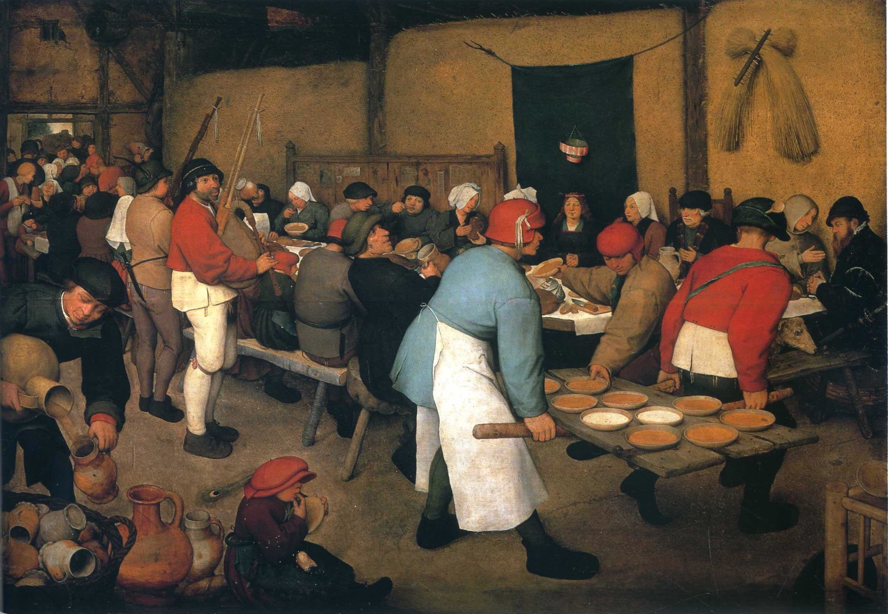
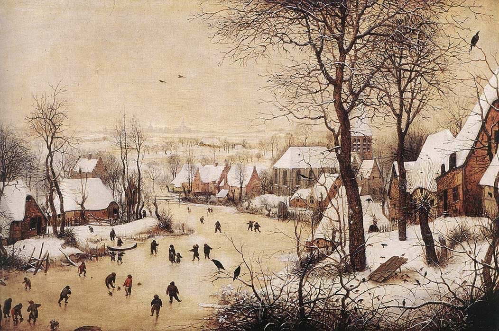
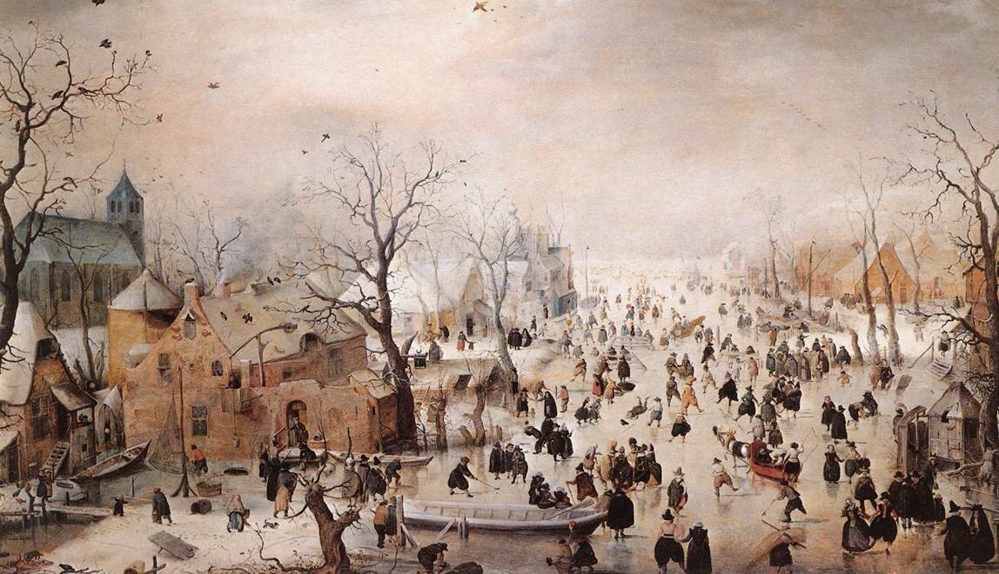
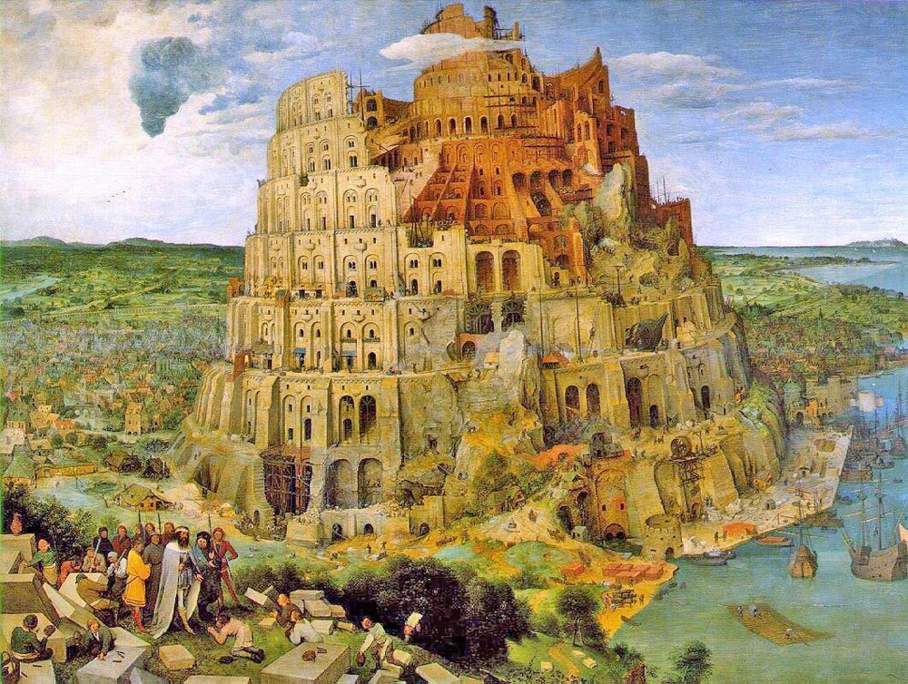

「农家乐画家」老布鲁格尔
- link
- 西方艺术课
老布鲁格尔（1525-1569）被称为「农家乐画家」，他是16世纪尼德兰画派最伟大的画家，在他的绘画的影响下，画家们终于开始关注人物之外的东西，门类画逐步诞生。老布鲁格尔非常善于画民间日常生活的景象，描绘普通人的生活场景，从肉铺、菜市场到交易市场等等。 老布鲁格尔的绘画总结了尼德兰艺术发展的成果，为17世纪的艺术家们奠定了基础。
老布鲁格尔活跃的地区是现在的比利时，当时的北方画家在宗教改革的社会大环境下，不能再画宗教主题，为了防止「下岗」，就只好转而进行其他题材的创作，渐渐诞生了门类画。所谓门类画，也被称为风俗画，是对一类特定的主题进行描绘的画作，把社会生活风俗都融入在其中。
老布鲁格尔的绘画表现出了深刻的观察力，他在对乡村面貌、农村人形象的刻画上有了自己的风格和表达方式。老布鲁格尔非常著名的代表作《乡村婚宴图》，和之前我们所看到的高大上的宗教主题画截然不同，没有任何高贵的气息。整个画面颜色的基调是土黄色，非常符合北方土房子的色彩特征。画中要出嫁的新娘、她身边的父母等人物形象，跟文艺复兴的主流肖像有着天壤之别，人物有着典型的农村人的朴实感。这种接地气的刻画是属于老布鲁格尔的彻底创新，是对当时审美观念的一种颠覆。
老布鲁格尔的绘画中常常充满讽刺意味，是一位很有幽默感的画家。他通过描绘民间故事，来讽刺当下的政治环境。16世纪左右的尼德兰地区，陷入了和西班牙统治者之间的斗争，老布鲁格尔在画中融合民间元素，来讽刺西班牙统治者的暴行。
老布鲁格尔是画家博斯的继承者和发扬者，博斯在画中运用靠想象而来的「上帝视角」，老布鲁格尔则是描绘真实的「远景视角」 。老布鲁格尔很好的继承了博斯没有主角、以俯视众生的角度作画的视角，将地面上所能看到的风景物体都一一铺陈展现出来，在画面中容纳大量的内容，散点式分布，让画中每一个细节都能供人慢慢品味。
老布鲁格尔的绘画对后世风景画的诞生启发很大，画中人物开始以配角的方式出现，画面的主体变成了人物以外的东西。在老布鲁格尔的《农村雪景图》中，最能抓住视线的就是大片白雪皑皑的乡村景色。在最有代表性的作品《巴别塔》中，画面史无前例第一次是以一栋建筑作为主体第一时间映入人们眼中。



